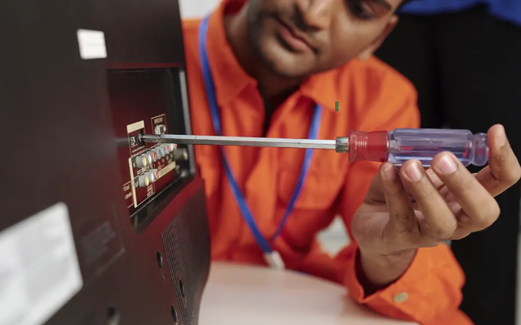

Reparación de Televisores LED, LCD, Smart TV.

$190.000 Desde
Costo de la revisión
Sobre este servicio
La reparación de televisores es un servicio técnico especializado que busca devolver el funcionamiento óptimo
a tu equipo, ya sea por fallas en la imagen, el sonido o el sistema interno. Nuestro personal calificado realiza
un diagnóstico completo para detectar el origen del problema y aplicar la solución más adecuada.
Además, trabajamos con repuestos originales y herramientas de precisión para garantizar resultados confiables y
duraderos. Así, podrás disfrutar nuevamente de tu televisor como el primer día, sin interrupciones ni pérdida de calidad.
Características importantes
- Evaluación detallada del sistema electrónico y de imagen para identificar fallas con precisión.
- Servicio ágil con garantía sobre la intervención realizada.
- Sustitución de componentes dañados por piezas certificadas, asegurando mayor durabilidad.